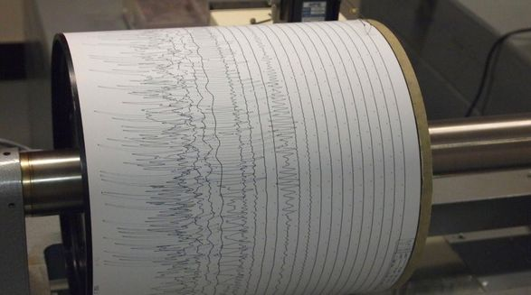
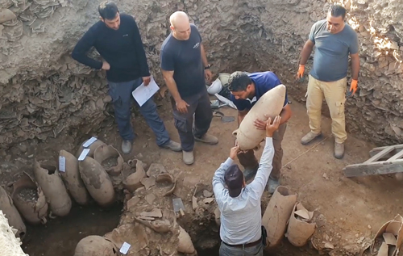
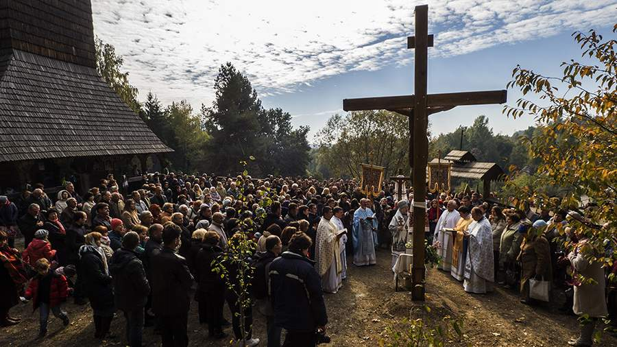

Главный тренер «Амура» Михаил Кравец прокомментировал поражение команды в матче регулярного чемпионата КХЛ с «Ак Барсом» (2:3 ОТ).
«Немножко растерялись в начале игры, потом команда стала хорошо двигаться, бороться, — сказал Кравец.
— Достойное сопротивление оказывали Ак Барсу в первом периоде, потом добавили еще во втором, хорошо смотрелись.
Только разве что в конце второго пропущенный гол был неприятный.
Игра хорошая, скоростная, много борьбы, много моментов, много самоотверженности.
Посмотрели хороший хоккей, итог решил только овертайм. Овертайм, буллиты у нас последнее время не очень уверенно идут, второй раз подряд проигрываем.
С другой стороны, на выезде против сильной команды сыграли достойно и взяли одно очко».
Землетрясение магнитудой 4,6 зарегистрировали на юго-западе Польши. Об этом сообщает Европейско-средиземноморский сейсмологический центр, передает УНН.
Детали. Эпицентр подземных толчков располагался в 46 км к северу от города Легница, с населением около 106 тысяч человек.
Очаг землетрясения залегал на глубине 10 км. По данным EMSC, это второе легкое землетрясение в Польше за последние 33 часа.
Держитесь от людей на расстоянии как минимум 1 метра, особенно если у них кашель, насморк и повышенная температура.
При нахождении внутри помещения необходимо соблюдать дополнительную дистанцию.
Чем на большем расстоянии вы остаетесь, тем безопаснее.
Выработайте привычку носить маску в людных местах. С тем чтобы обеспечить максимальную эффективность применения масок, их необходимо надлежащим образом использовать, хранить, обрабатывать и утилизировать.
В сегодняшней статье мы хотели бы поделиться с вами историей успеха одной небольшой студии из Украины которая на сегодняшний день пользуются большими спросом на мировом рынке. Команда начала свой путь в не столь далеком 2014 году когда, из-за нестабильной экономической ситуации, сократили одного проджект-менеджера со стажем более 5 лет из довольно огромной корпорации. По словам Виталия: "Накопив достаточно большой опыт и небольшой стартовый капитал больше не хотелось идти искать работу, на которой в любой момент тебе могу "дать пенок под зад", каким бы ты крутым сотрудником не был. Появилась идея создать аутсорсинговую компанию, которая будет помогать делать игры или анимацию для гигантов мирового рынка в кино и игровой индустрии.
5 канал у повідомленні про скандал в «Укрексімбанку» наголосив, що керівник банку Євген Мецгер є другом президента Володимира Зеленського.
Втім уже наступного дня констатував, що «навіть особиста дружба Євгена Мецгера з Володимиром Зеленським не врятує першого від неминучих наслідків». Про це йдеться в моніторингу щоденних теленовин за 4—9 жовтня 2021 року.
«Жодного дня без скандалу. Це вже майже правило для “слуг” чи для друзів президента.
Ще не перетравили офшорну тему, як сьогодні відзначився голова державного “Укрексімбанку” Євген Мецгер», — йшлося в повідомленні 5 жовтня, у день, коли відбувся інцидент із журналістами програми «Схеми: корупція в деталях» в «Укрексімбанку».
В цей день про скандал повідомили 5 канал та Суспільне. Втім уже наступного дня 5 канал повідомив про відсторонення Мецгера та підозру, яку йому вручили.
Управление древностей Израиля обнародовало итоги раскопок огромного винодельческого комплекса. На нем в византийское и раннеисламское время делали виноградное вино, которым снабжали многие страны Средиземноморья.
За время интенсивных раскопок исследователи обнаружили пять больших виноделен. Открытые производственные постройки занимали площадь в несколько гектаров, их размещение и конструкция были тщательно спроектированы. Вокруг больших резервуаров, в которых давили ногами виноград, располагались емкости для брожения.
14 октября православные верующие отмечают праздник Покрова Пресвятой Богородицы. Об истории праздника и его традициях «Известиям» рассказал протоиерей Андрей Ткачев.

Наступление холодов зачастую чревато простудами, а чтобы не заболеть, нужно включить в рацион мед, рыбу, чай и фрукты - но это далеко не все.